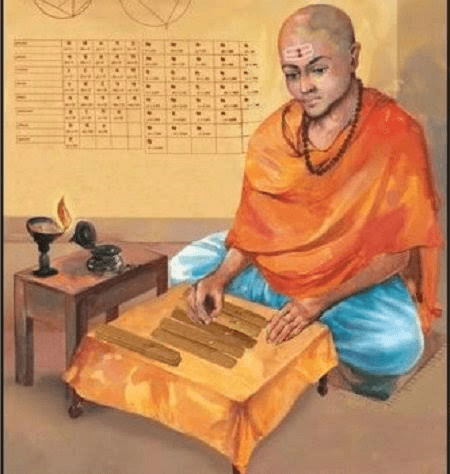

My Math Project
Brahmagupta: The Mathematician and Astronomer
Early Life and Work

Birth: Brahmagupta was born in 598 CE, likely in Bhillamala (modern-day Rajasthan, India), during the Gupta period, a time known for significant advancements in science and mathematics.
Patronage: He was the head of an astronomical observatory in Ujjain, a prominent center for ancient Indian astronomy, which allowed him to make significant contributions in both mathematics and astronomy.
Major Contributions in Mathematics
- Algebra: Brahmagupta is often called the Father of Algebra for his systematic approach to solving linear and quadratic equations. He was one of the first to work with negative numbers, and he outlined rules for their use in mathematical operations, including how to add, subtract, multiply, and divide them.
- Quadratic Equations: Brahmagupta provided a general solution for quadratic equations of the form ax² + bx + c = 0. He introduced methods for determining the roots of such equations, which were groundbreaking in algebraic solutions.
- Geometry: He made significant contributions to the geometry of cyclic quadrilaterals (four-sided polygons where all vertices lie on a common circle). His work in geometry formed a basis for later developments in trigonometry.
- Arithmetic Progressions: Brahmagupta worked on sequences, especially arithmetic progressions (sequences where each term is derived by adding a constant to the previous term). He developed methods to calculate the sum of arithmetic progressions, a critical concept in number theory.

- Number Theory: Brahmagupta made pioneering contributions to number theory, especially in understanding properties of numbers, divisibility, and the solutions to Diophantine equations (equations that seek integer solutions).
Contributions to Astronomy
- Planetary Motion: Brahmagupta made critical contributions to understanding the motion of planets, including their positions and movements in the sky.
- Solar and Lunar Eclipses: He developed methods to predict solar and lunar eclipses with remarkable accuracy, calculating their timings and durations.
- Earth and the Universe: Brahmagupta postulated that the Earth was spherical and moved in space, countering the earlier belief that the Earth was flat. He also suggested that the Earth's motion was due to the interaction of various forces.
- Gravitational Theory: Brahmagupta had an early understanding of what we now consider gravity. He observed that objects fall toward the Earth, which is a fundamental concept of gravitational attraction.
Influence and Legacy
Brahmagupta's work influenced not only India, but also the Islamic world and Europe. His theories on algebra, geometry, and number theory were foundational to later mathematicians in both the Eastern and Western worlds.
His contributions, particularly his work on zero, algebra, and number theory, are considered critical to the development of mathematics and astronomy as we know them today.